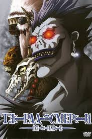
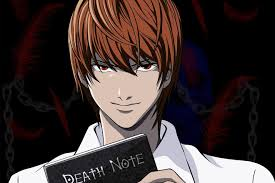
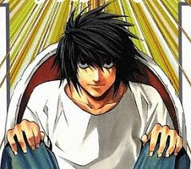

главный герой: Ягами Лайт
Главным героем является обыкновенный на первый взгляд подросток, ученик старшей школы, которому выпала удача воспользоваться необчным артефактом из загробной жизни, а именно тетрадью смерти. И вот получив этот артефакт Ягами Лайт узнаёт о его силе и решает стать спасителем мира, верша правосудие над преступниками с помощью неё.
Окружение Ягами
- Отец Ягами Лайта - главный детектив, который по иронии судьбы охотиться на своего сына
- Эл - своего рода шерлок холмс, главный соперник главного героя, отличающийся уже раскрытыми сложными преступлениями
- Рюк - Бог смерти, владелец тетради смерти, главный зритель всех деяний Ягами Лайта, обожает яблоки
Любимые эпизоды
- Казнь - L выпускает Лайта и Мису из заключения. L сообщает, что штаб-квартира расследования переносится в построенный им 23-этажный дом. В этом же доме поселяют Мису. Лайт и L, скованные наручниками, продолжают совместное расследование дела Киры
- Отец - Лайт отказывается от тетради и пересылает её в полицию. Соитиро Ягами получает от Рюка глаза Бога Смерти и видит настоящее имя Мэлло, но не успевает записать его в тетрадь. Соитиро Ягами умирает. Тетрадь возвращается её владельцу — синигами Сидо
- Новый мир - Долгая битва между Кирой и его преследователями подходит к концу, Кира умирает, тетрадь смерти возвращается к богу смерти.
Галерея
Изображения героев
  Полезные ссылки
Официальный сайт аниме: Тетрадь Смерти VIZ
Донат
Ваша поддержка помогает развивать нашу страничку: